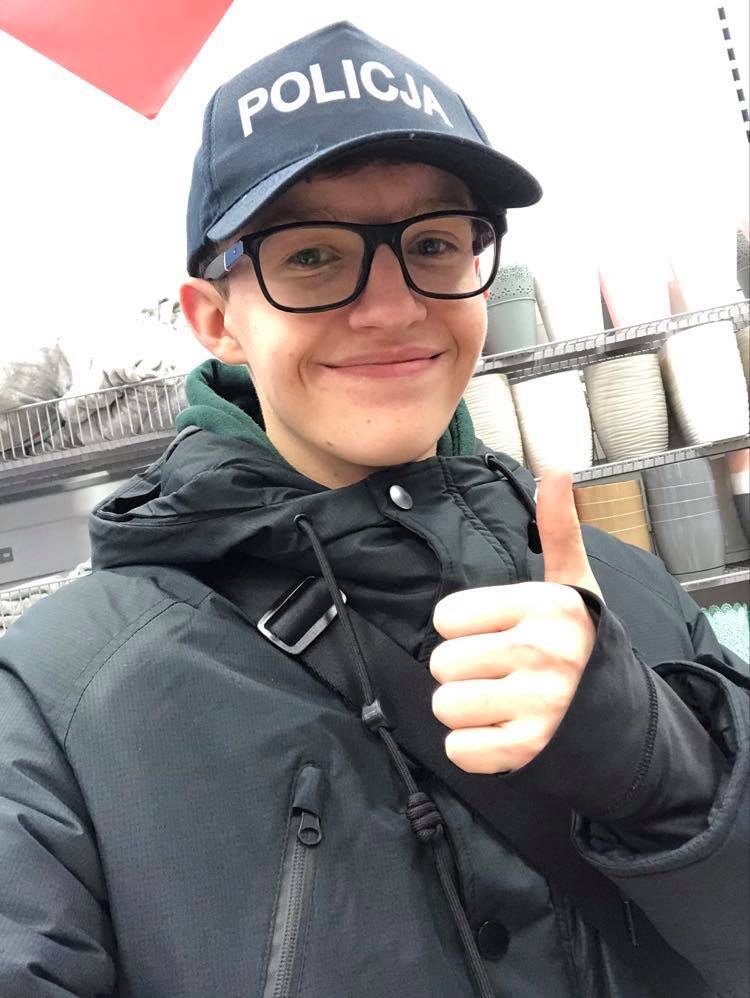

Patryk Kurek

Kilka słów o mnie:
Nazywam się Patryk,jestem na drugim roku kierunku Technik-informatyk.
Mam 18lat,184cm wzrostu,wade wzroku i 72kg wagi :D
Od zawsze interesuję się programowaniem,lecz zawsze brakowało mi na to czasu.
Jest to moja druga strona od rozpoczęcia kwarantannowej nauki programowania.
Z czasem zacznę uzupełniać informacje z menu oraz sprawię,że zacznie działać.